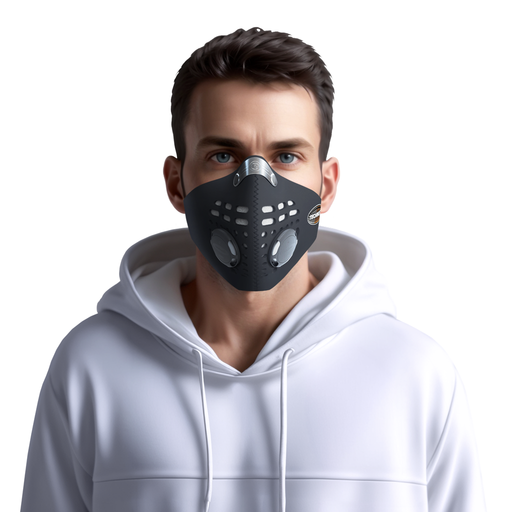
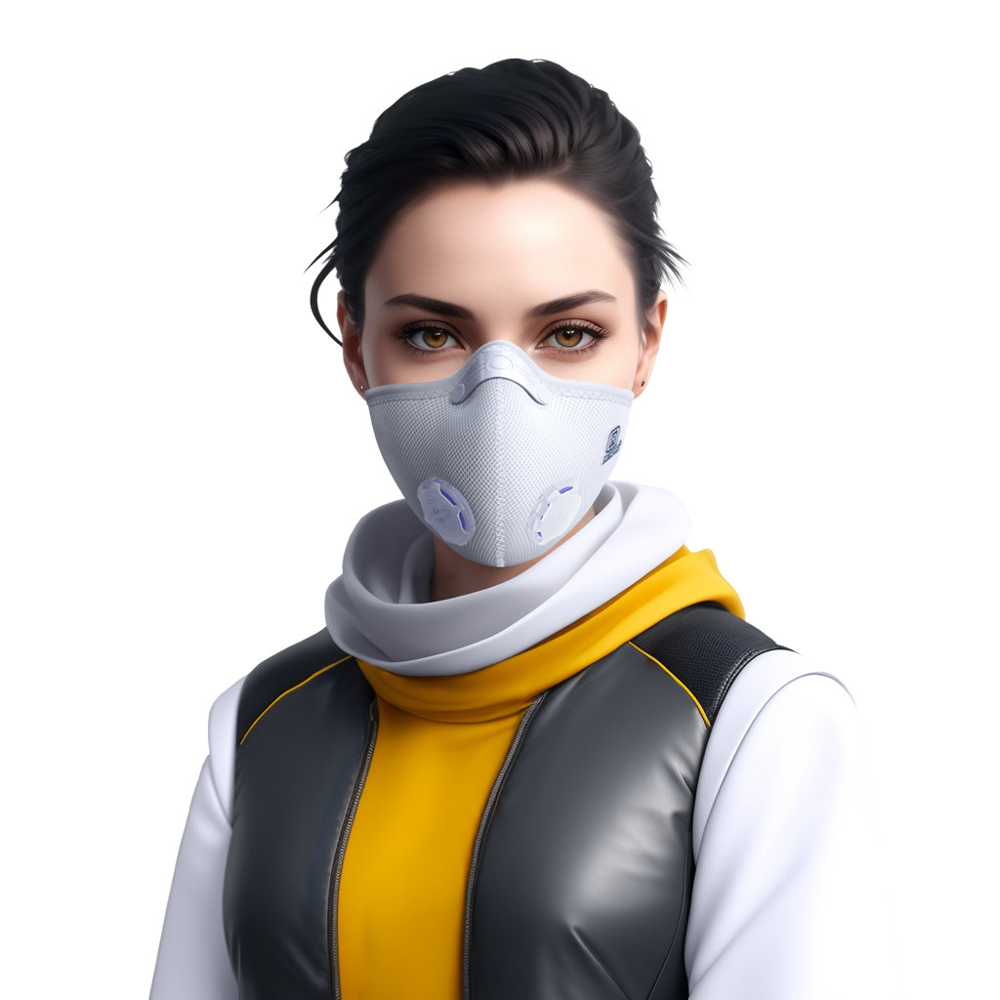
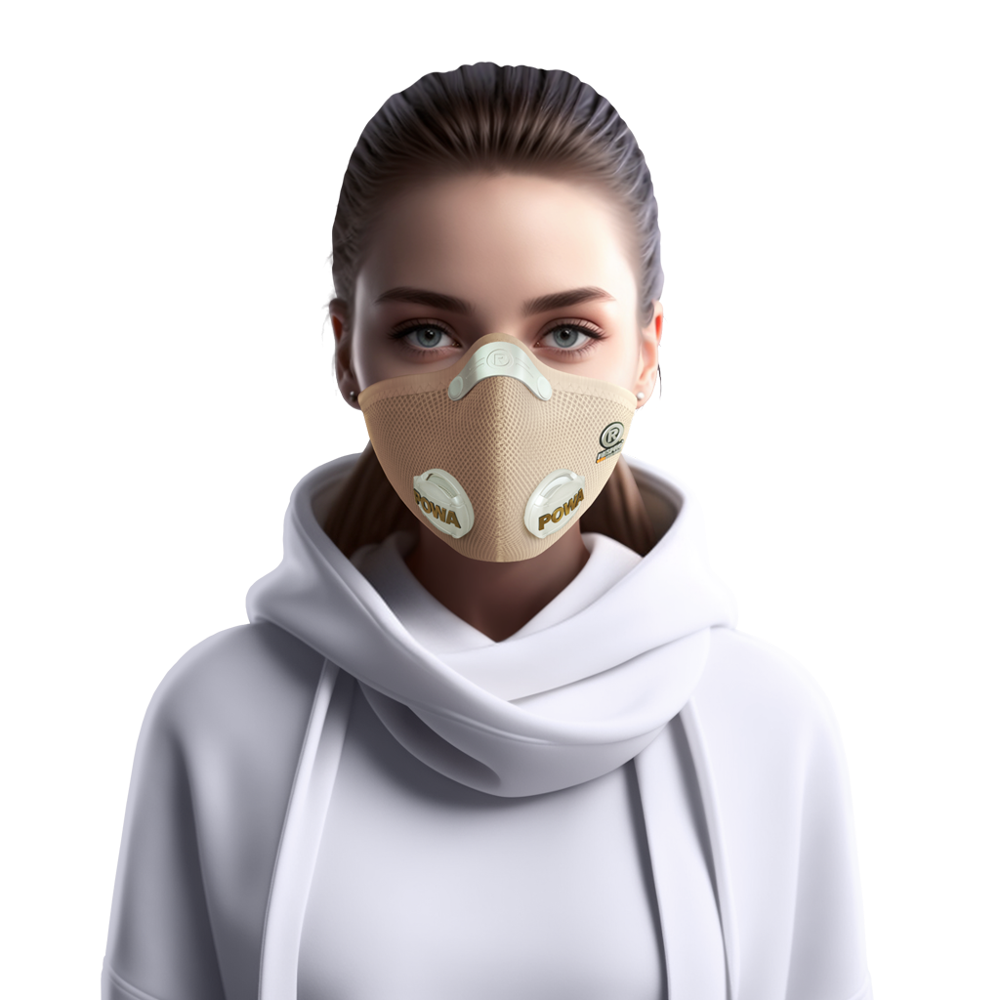
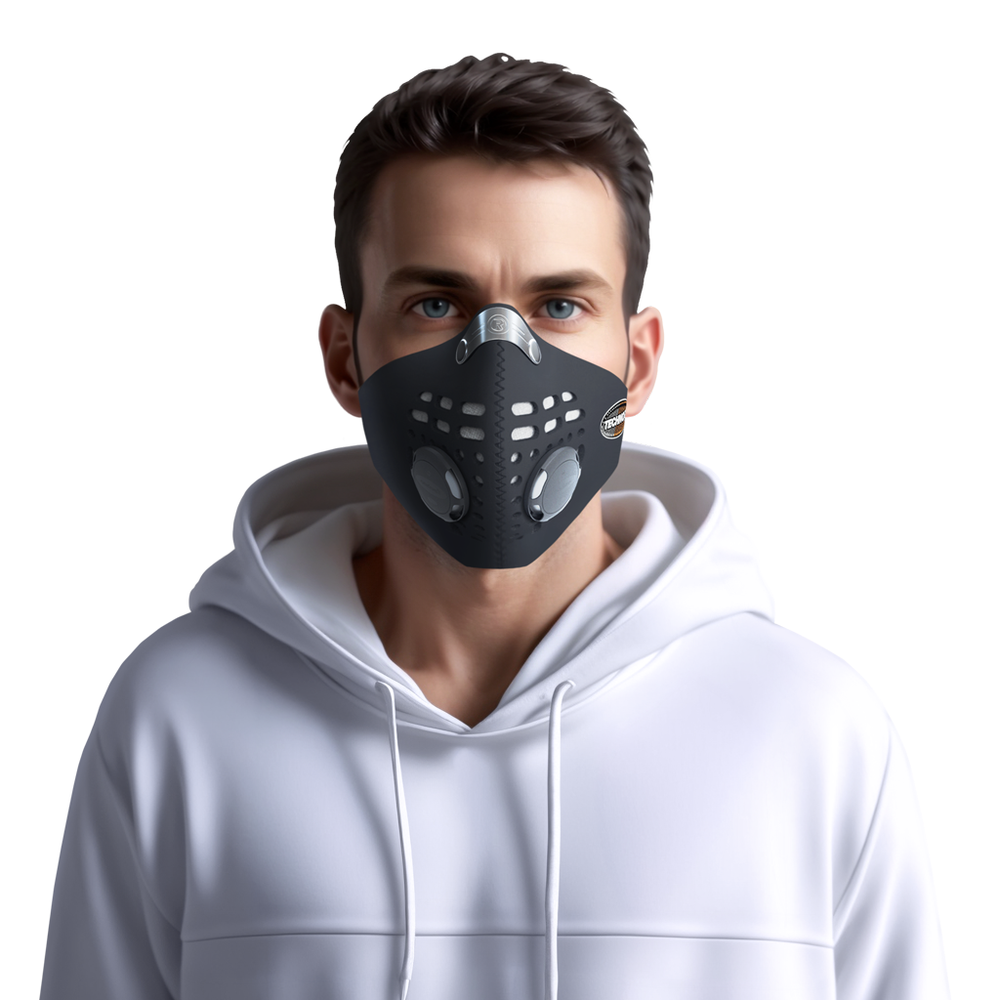
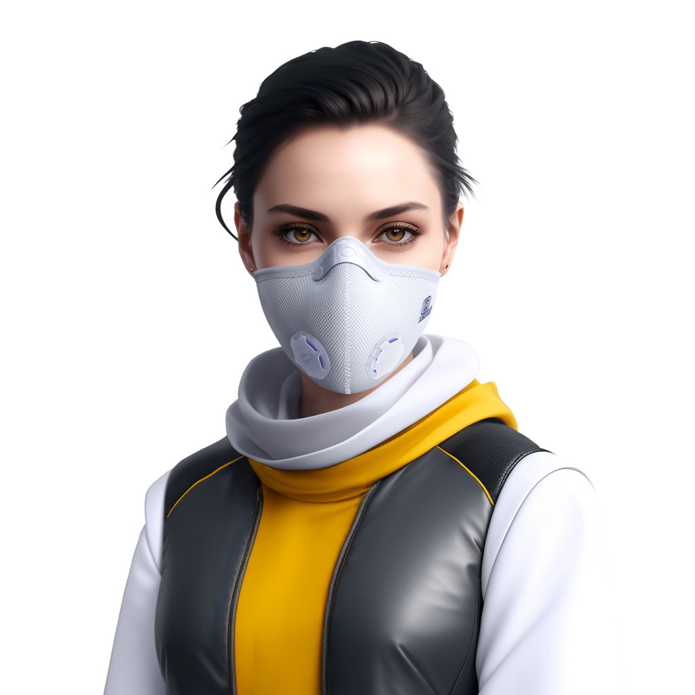
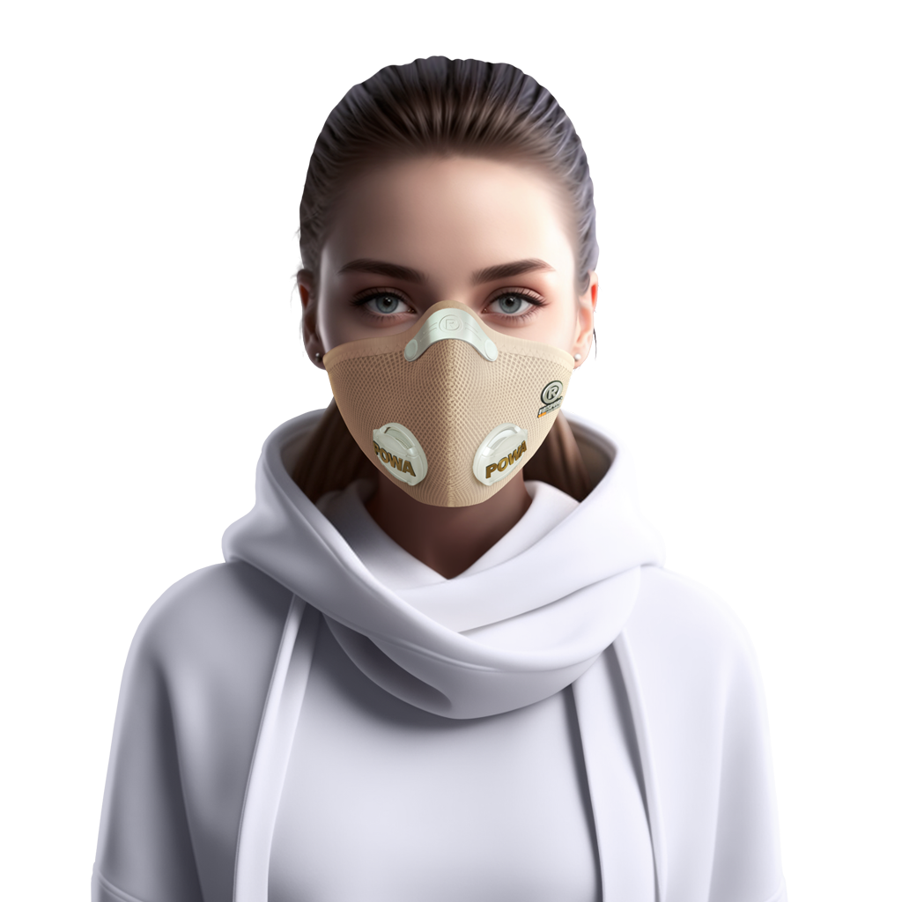

Респиратор
Ultra light
Respro
Ультралегкая и дышащая маска с
фильтрующим материалом высокой
эффективности
Подходит всем для использования в городских условиях, на
работе, в дороге, а также во время физических нагрузок,
таких как бег или езда на велосипеде
Цвет в наличии: песочный, олива, черный
 






Наша цель - Обеспечить Вашу защиту
Мучает сухой кашель, сильный насморк, зуд в носу, чихание?
Возможно, у вас – аллергия!
По статистике, каждый пятый житель планеты страдает аллергией на пыльцу растений, резкие запахи и пыль

Респираторы отлично подходят для повседневных занятий, аллергикам, спортсменам
Незаменимы при уборке дома, занятиях садоводством и чистке домашних животных
Все модели снабжены сменными фильтрами, которые достаточно менять раз в сезон.
Препятствуют попаданию в легкие вредных раздражителей и опасных веществ
Креативный и ультрамодный дизайн не оставит равнодушным спортсменов и их поклонников
Модели - Аллергик и УльтраЛайт изготовленные из гипоаллергенного материала
Все модели снабжены сменными фильтрами, которые достаточно менять раз в сезон.
Маска – это не лекарство: аллергию она не вылечит, но обеспечивает комфорт
Выберите свою маску
Респиратор
Allergy respro

Респиратор
Techno respro
Респиратор
Ultra light respro
Бандана
Bandit respro
- Дети и маски
- Причины астмы
- Сезон аллергии
- Активная жизнь
Как уговорить ребёнка
носить маску?
Не нужно уговаривать, просто купите.
Маски от аллергии не только помогут защититься от аллергических реакций, но и подарят вашим детям незабываемые моменты. У них есть шанс превратиться в “супергероев” и выделиться среди своих друзей.
Вы можете использовать этот преимущество, чтобы заставить ребенка держать маску на лице. Вместо уговаривания и подстреканий, просто предложите им выбрать маску, которая идеально подходит их индивидуальному вкусу.
Дети носят маски с удовольствием и воображают себя “супергероями”
Маски Respo специально разработаны для защиты от широкого спектра аллергенов, включая пыль, пыльцу, кожные чешуйки животных, мох и плесень. Они лёгкие, не содержат латекса, не вызывают раздражения и дискомфорта, что позволяет детям заниматься любимыми видами спорта и активно проводить время на улице.
Выберите подходящую маску для Вашего ребёнка:
Respro Allergy mask, Respro Techno mask, Respro Bandit Scarf, Respro Ultra Light
Причины
астмы
Астма - это серьезно.
Его симптомы могут включать кашель, одышку, пищевые и респираторные аллергии, часто сложности возникают при дыхании, особенно в случаях, когда имеется большое количество токсичных веществ в воздухе..
Антигистаминные препараты и ингаляторы могут помочь справиться с симптомами. Чтобы управлять астмой, необходимо обратить внимание на множество факторов, таких как: изменение образа жизни, включая правильное питание, ведение здорового образа жизни.
контроль над вредными привычками, а также поддержание связи с врачом и следование его рекомендациям и специальной диете.
Маски Respo специально разработаны для защиты от широкого спектра аллергенов, включая пыль, пыльцу, кожные чешуйки животных, мох и плесень. Они лёгкие, не содержат латекса, не вызывают раздражения и дискомфорта, что позволяет детям заниматься любимыми видами спорта и активно проводить время на улице.
Выберите подходящую маску для Вашего ребёнка:
Respro Allergy mask, Respro Techno mask, Respro Bandit Scarf, Respro Ultra Light
Сезон
аллергии
Несколько слов об аллергии.
Аллергия - это реакция иммунной системы на определенное вещество, которое в больших количествах считается патологическим. Это могут быть продукты питания, пыль, пух, животные, цветы и даже лекарства.
Симптомы аллергии могут варьироваться от легких до тяжелых и включать красноту, зуд, насморк, отек глотки, тошноту, рвоту и даже анафилактический шок. Причиной аллергии является нарушение работы иммунной системы, что может быть вызвано генетическими факторами, окружающей средой, инфекциями и другими факторам.
Маски Respo специально разработаны для защиты от широкого спектра аллергенов, включая пыль, пыльцу, кожные чешуйки животных, мох и плесень. Они лёгкие, не содержат латекса, не вызывают раздражения и дискомфорта, что позволяет детям заниматься любимыми видами спорта и активно проводить время на улице.
Выберите подходящую маску для Вашего ребёнка:
Respro Allergy mask, Respro Techno mask, Respro Bandit Scarf, Respro Ultra Light
Активная
жизнь
Мы должны двигаться.
Активный образ жизни - это ключ к здоровью и успеху. Регулярные физические нагрузки не только укрепляют тело, но и повышают настроение и уровень энергии.
Если вы хотите оставаться в форме и улучшать свое здоровье, попробуйте заняться спортом или фитнесом. Выберите что-то, что вам действительно нравится, чтобы вам было легче следовать своим целям..
Дети носят маски с удовольствием и воображают себя “супергероями”
Маски Respo специально разработаны для защиты от широкого спектра аллергенов, включая пыль, пыльцу, кожные чешуйки животных, мох и плесень. Они лёгкие, не содержат латекса, не вызывают раздражения и дискомфорта, что позволяет детям заниматься любимыми видами спорта и активно проводить время на улице.
Выберите подходящую маску для Вашего ребёнка:
Respro Allergy mask, Respro Techno mask, Respro Bandit Scarf, Respro Ultra Light
.png)
Популярные вопросы
Остались вопросы?
Выберите любой удобный способ для связи и наш менеджер свяжется с Вами в течении часа
1. Однослойный - высокоэффективный сухой воздушный Хепа-фильтр (Hepa-Type)
Этот фильтр задерживает:
Cверхмелкие частицы, включая пыльцу и некоторые бактерии, споры растений, все виды аллергенной пыли, глиняную, угольную пыль, дым, копоть, домашнюю и строительную пыль, сигаретный дым, частицы шерсти домашних животных, выхлопные газы.
2. Двуслойный - это Хепа-фильтр + угольный фильтр Dynamic ACC (Activated Charcoal Cloth)
Этот фильтр задерживает Вышеперечисленное, плюс:
Испарения бытовых чистящих веществ, парфюмерия, пары масляной краски.
1. Однослойный - высокоэффективный сухой воздушный Хепа-фильтр (Hepa-Type)
Этот фильтр задерживает:
Cверхмелкие частицы, включая пыльцу и некоторые бактерии, споры растений, все виды аллергенной пыли, глиняную, угольную пыль, дым, копоть, домашнюю и строительную пыль, сигаретный дым, частицы шерсти домашних животных, выхлопные газы.
2. Двуслойный - это Хепа-фильтр + угольный фильтр Dynamic ACC (Activated Charcoal Cloth)
Этот фильтр задерживает Вышеперечисленное, плюс:
Испарения бытовых чистящих веществ, парфюмерия, пары масляной краски.
1. Однослойный - высокоэффективный сухой воздушный Хепа-фильтр (Hepa-Type)
Этот фильтр задерживает:
Cверхмелкие частицы, включая пыльцу и некоторые бактерии, споры растений, все виды аллергенной пыли, глиняную, угольную пыль, дым, копоть, домашнюю и строительную пыль, сигаретный дым, частицы шерсти домашних животных, выхлопные газы.
2. Двуслойный - это Хепа-фильтр + угольный фильтр Dynamic ACC (Activated Charcoal Cloth)
Этот фильтр задерживает Вышеперечисленное, плюс:
Испарения бытовых чистящих веществ, парфюмерия, пары масляной краски.
1. Однослойный - высокоэффективный сухой воздушный Хепа-фильтр (Hepa-Type)
Этот фильтр задерживает:
Cверхмелкие частицы, включая пыльцу и некоторые бактерии, споры растений, все виды аллергенной пыли, глиняную, угольную пыль, дым, копоть, домашнюю и строительную пыль, сигаретный дым, частицы шерсти домашних животных, выхлопные газы.
2. Двуслойный - это Хепа-фильтр + угольный фильтр Dynamic ACC (Activated Charcoal Cloth)
Этот фильтр задерживает Вышеперечисленное, плюс:
Испарения бытовых чистящих веществ, парфюмерия, пары масляной краски.
1. Однослойный - высокоэффективный сухой воздушный Хепа-фильтр (Hepa-Type)
Этот фильтр задерживает:
Cверхмелкие частицы, включая пыльцу и некоторые бактерии, споры растений, все виды аллергенной пыли, глиняную, угольную пыль, дым, копоть, домашнюю и строительную пыль, сигаретный дым, частицы шерсти домашних животных, выхлопные газы.
2. Двуслойный - это Хепа-фильтр + угольный фильтр Dynamic ACC (Activated Charcoal Cloth)
Этот фильтр задерживает Вышеперечисленное, плюс:
Испарения бытовых чистящих веществ, парфюмерия, пары масляной краски.
контакты
Москва
ул. 5-Соколиной горы
Время работы:
Ежедневно с 8:30 до 21:00